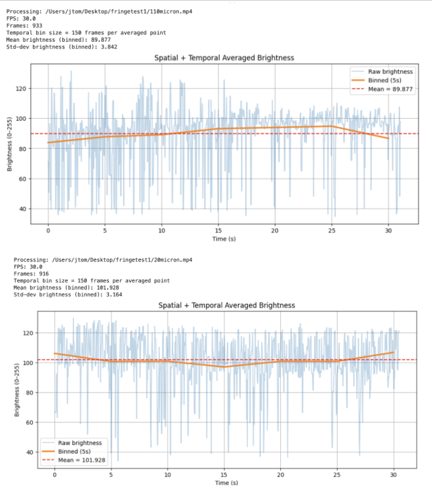
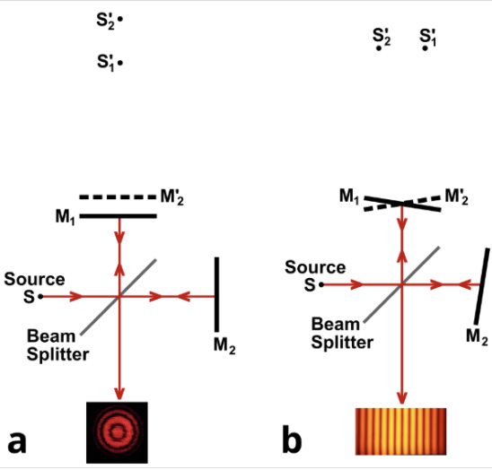
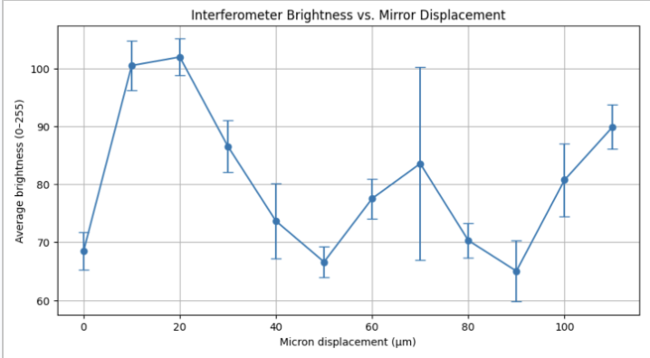
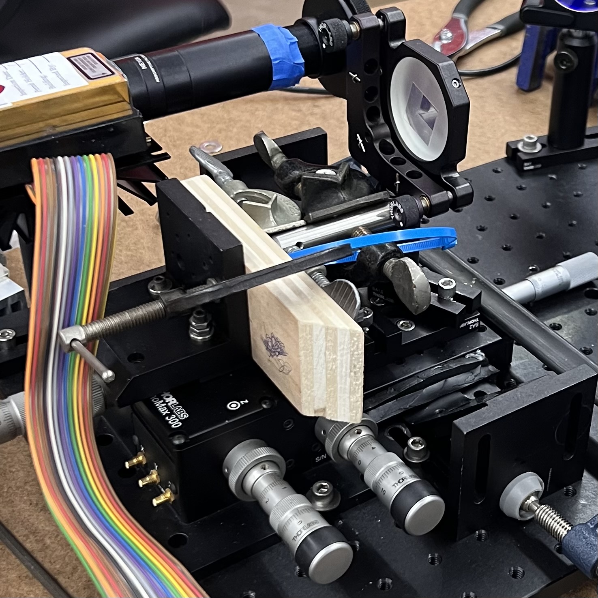

Interferometry-Based Optical Profilometer
Project Overview
Objective
Develop a high-precision optical profilometer using interferometric measurement based on the Michelson interferometer design.
This project was completed as a personal project.
Details
- Designed and built an optical profilometer using commercial optics and a coherent laser source
- Implemented the system on an optical table through alignment and calibration techniques
- Developed a Python-based digital signal processing pipeline to extract surface profiles from interference fringe data
Responsibilities
- Led project planning, research, and task delegation within a two-person team
- Designed and implemented signal processing algorithms for interferometric data analysis
- Assisted in optical system alignment, calibration, and experimental validation
Tools & Software
- Python for signal processing and data analysis
- Mirrors, beam splitters, and laser source
- Thorlabs camera
- Opto-mechanical mounts and clamps
Outcome
Achieved statistically significant surface profile measurements with resolution on the order of hundreds of nanometers.
Project Photos
Click an image to expand it.




